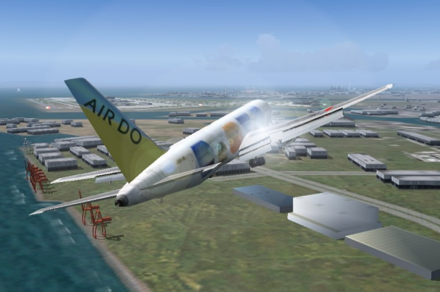

羽田 16L へ進入中の AirDo B767型機
機体: Project Open Sky Hokkaido Intl AirLines Boeing 767-33A(ER) V3
画像をクリックすると拡大される画像もあります。かなり迫力があります。

Tokyo Wan Aqua-Line
アクアラインと Beechcraft Baron 58 特別仕様

京浜工業地帯
アクアライン側から京浜工業地帯を臨んでいます。
工業地帯の建物は簡略化された3Dで描画されます。
これは少しでもフレームレートを上げるための配慮です。
しかし，アプローチの際のランドマークになるように
建物の位置は極めて正確に再現されています。
左下は "風の塔" です。
京葉工業地帯
千葉市側から臨む京葉工業地帯

Tokyo Wan Aqua-Line
私は，タヒチのボラボラやランギロアなど 島の作品を多く手がけていますが， このような3Dの作品にとり組むこともあります。 FS2000までの作品は陰面処理の複雑さ により， 誘導路の設計を簡略化していましたが， FS2002からはデザインを一新させました。

Aqua-Line Skeleton Model
デザイン中の "海ほたる" です。 クリックすると，三面図が表示されます。 最新版のアクアラインは Seishow 氏の3D CAD "jam" で作成しました。

海ほたる
日没寸前の宵闇に浮かび上がるアクアライン
Tokyo Bay Scenery 2005 は東京湾を中心に
N33:45 E138:45 から N36:55 E141:05 までの広い範囲をカバーしています。
その中からスクリーンショットを幾つか...

芦ノ湖
富士五湖の一つ，芦ノ湖です。
標高データにSRTM 3arc/sec を用いているので，
詳細な海岸線と共に，
実際に近い地形が描画されています。

奥利根湖
銚子から利根川に沿って飛行していくと，
この奥利根湖にたどり着きます。
(奥利根湖は公開版の TBS2k5.zip には含まれていません)
伊豆半島
高度 4万1000フィートからの俯瞰です。
VFR の場合，flight simulation の地形データで
特に重要なのが，正確な海岸線或いは河川であることを
痛感させられます。

富津岬
手前から，富津岬，新日鐵君津そしてアクアラインです。

御蔵島
伊豆七島の御蔵島です。
島の周囲は断崖絶壁に囲まれています。